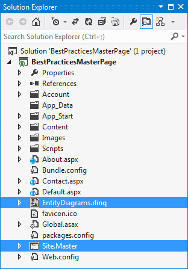

In this topic you will learn how to manage the OpenAccessContext in the MasterPage.
Suppose, you have an ASP.NET Web Application and Telerik OpenAccess Domain Model.

- Open the Master Page for your web application (in this demo this is Site.Master).
- In the code-behind file of that page, create a field for the OpenAccessContext and then create a public property, so the context could be accessed from the pages that have this page as a master.
- Override the OnInit method. Here you need to initialize the context, i.e. to create a new instance of the OpenAccessContext.
- The final step is to dispose the context. You need to override the Dispose method and dispose the context there.
| C# |  Copy Code Copy Code |
|---|---|
|
using System; namespace BestPracticesMasterPage { public partial class SiteMaster : System.Web.UI.MasterPage { private EntitiesModel context; public EntitiesModel ModelContext { get { return this.context; } set { this.context = value; } } protected override void OnInit(EventArgs e) { base.OnInit(e); this.context = new EntitiesModel(); } public override void Dispose() { //The disposal of the scope is made here, just before the Page is disposed //When using multiple pages the best way is to do this step in the Dispose() //method of the Master Page as well this.context.Dispose(); base.Dispose(); } } } | |
| VB.NET | Copy Code |
|---|---|
|
Public Class Site Inherits System.Web.UI.MasterPage Private _context As EntitiesModel Public Property ModelContext() As EntitiesModel Get Return Me._context End Get Set(ByVal value As EntitiesModel) Me._context = value End Set End Property Protected Overrides Sub OnInit(ByVal e As EventArgs) MyBase.OnInit(e) Me._context = New EntitiesModel() End Sub Public Overrides Sub Dispose() 'The disposal of the scope is made here, just before the Page is disposed 'When using multiple pages the best way is to do this step in the Dispose() 'method of the Master Page as well Me._context.Dispose() MyBase.Dispose() End Sub End Class | |
Accessing the OpenAccessContext from the Pages
For every page that will use the OpenAccessContext, you should declare a field that exposes the context. You need to override the OnInit method and there you will initialize (retrieve) the context. Next in the Page_Load method you could load the required data by using the already retrieved context. The code-snippet below shows how the Default.aspx page could look like:
| C# | Copy Code |
|---|---|
|
using System; using System.Collections.Generic; using System.Linq; namespace BestPracticesMasterPage { public partial class _Default : System.Web.UI.Page { private EntitiesModel dbContext; protected override void OnInit(EventArgs e) { base.OnInit(e); SiteMaster siteMaster = this.Master as SiteMaster; this.dbContext = siteMaster.ModelContext; } protected void Page_Load(object sender, EventArgs e) { // Load your data here. List<Category> categories = this.dbContext.Categories.ToList(); } } } | |
| VB.NET | Copy Code |
|---|---|
|
Public Class _Default Inherits System.Web.UI.Page Private dbContext As EntitiesModel Protected Overrides Sub OnInit(ByVal e As EventArgs) MyBase.OnInit(e) Dim _siteMaster As Site = TryCast(Me.Master, Site) Me.dbContext = _siteMaster.ModelContext End Sub Protected Sub Page_Load(ByVal sender As Object, ByVal e As EventArgs) ' Load your data here. Dim categories As List(Of Category) = Me.dbContext.Categories.ToList() End Sub End Class | |